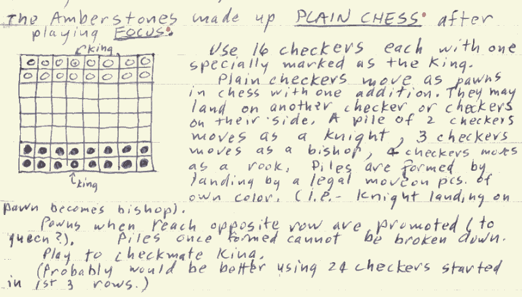
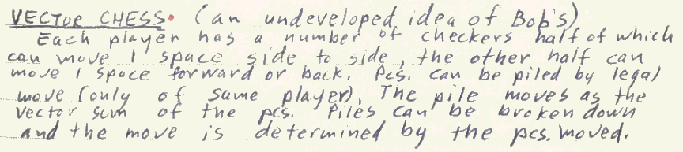

ABSTRACT CHESS
Copyright (c) 2003 João Pedro Neto
This game is played on a 8x8 square board with the following setup:
- STACK - a stack of one to six regular stones of either color.
- A royal stone (marked by a point in the diagram) cannot belong to a stack.
- TURN - On each turn, each player must do one of the following things:
- Move a friendly stack.
- Transfer one regular stone from a stack to an adjacent (orthogonal or diagonal) friendly stack.
- Capture an enemy stack by replacement (as in chess).
- MOVE/CAPTURE RANGE - A stack move/capture range depends of its size.
- A stack of size 1 moves like the chess Pawn (except there's no initial double move, no en-passant and no promotion).
- A stack of size 2 behaves like the chess Knight.
- A stack of size 3 behaves like the chess Bishop.
- A stack of size 4 or 5 behaves like the chess Rook (except there's no castling)
- A stack of size 6 behaves like the chess Queen.
- The royal stone behaves like the chess King.
- GOAL - The winner is whoever captures the royal stone.
The idea of this game is to strip out all the awkward Chess rules, while providing another way to build tension, tactics and overall strategy (using the new transfer mechanism).
An example White's turn. The white King is in danger of capture by one of the two black rooks. However, if he transfers one stone from the h6 knight (making a pawn) into the g7 rook (making a queen), the Black King will be captured in the next move.
From the comments about the game, one from Peter Aronson is especially relevant:
[...] on reflection I find myself wondering if the game doesn't make it too easy to make passive moves. A pair of Knights, for example, could pass back and forth a stone all day without substantially changing the board position. I wonder if a two move approach, as used in many of Ralph's recent board connecting games might be better. Each player would have two moves a turn: the first is obligatory, and requires moving a stack from one space to another; the second is optional, and consists of moving a stone from one stack to another. Or alternately, maybe a player could be forbidden to make two transfers in a row. Another issue (and this one was illuminated both by Zillions' play and John's earlier comments) is that the relation between the number of stones in a stack and the power of a stack is very irregular. Two stones are much more powerful than one stone, but three stones are hardly any stronger than two, while four stones are a fair bit stronger than three, and five stones are no stronger than four and six stones are much stronger than five. I wonder about this approach:
# of Stones Piece Type 1 Pawn (mfWcfF) 2 Mao 3 Bishop 4 Rook 5 Cardinal 6 Queen The Mao is the XiangQi Knight: it does not jump, it moves one step orthogonally and then one step diagonally away.
The Cardinal is the Bishop plus Knight.There are two ZRFs to play the game: one by L. Lynn Smith with stack oriented visual, and another by Peter Aronson more chess like.
In November 2025 I found, in the Sid Sackson archive, a mention to another royal game with a similar idea, Plain Chess:

June 8, 1963 entry

in the same day, another related (undeveloped) game idea
A copy of the comments from Chessvariants.com about Abstract Chess:
Peter Aronson wrote on Thu, May 29, 2003 04:22 AM WEST: Excellent ★★★★★ This is a real neat idea, which is why I'm giving it an excellent rating. However, I find myself wondering how it would play in practice. There seems to me that there would be a certain tendency for the Pawn line to get sucked into the back line at the start, producing a mess of attack routes.
John Lawson wrote on Thu, May 29, 2003 05:13 AM WEST: Excellent ★★★★★ I think many people would be tempted by the strategy Peter mentions, of the 'pawns' getting combined into the back rank pieces early on to build more powerful pieces. The approach I would try in my first game, however, would be to combine pairs of pawns into knights, resulting in having a total of six knights. There's even some logic in demotion: you start with a rook and two pawns, and end with three knights; or a queen and four pawns, and end with five knights. If you carry this idea to its conclusion, you get two bishops, and thirteen knights. In the endgame, you can recombine into whatever more powerful pieces you need. Of course, all this conversion carries a cost in tempo.
João Neto wrote on Thu, May 29, 2003 08:09 AM WEST: In fact, when you take a Pawn and use it to promote a piece, then you lose one piece (you cannot demote to an empty cell). It's not very good to have very few pieces because that implies on little maneuverability: one would be playing abstract chess, the other just chess.
About Lawson's suggestion, it sounds good. That's the beauty of new games, many open and unexplored possibilities, even if we always have to face that the game can be broken in the long term.
I've played two face 2 face games with a friend and the games went ok. That's not enough to judge a game, but it is a good start :)
João Neto wrote on Thu, May 29, 2003 04:23 PM WEST: Hi Michael,Well, about single 'protons' powers, I wanted to keep the flavour of FIDE Chess. It would be possible to imagine many Betza's Diff Chess configurations. That would mean that 'abstract chess' would be more than one game, it'd be a game system.
The reason of keeping single protons is related to the fact that it's not valid to place a proton on an empty square. I do think that this rule should be enforced, because there's a cost of creating an army of few powerful pieces: you lose flexibility!
About the idea of transferring protons based on the move range, it sounds good (I didn't think of it) but (maybe) there's a drawback: powerful pieces get even stronger. But hey, we are here to try new ideas :^)
I wish to keep as many open possibilities as possible, but without opening any nasty Pandora box (and there lies the art of game design, imho).
Peter Aronson wrote on Thu, May 29, 2003 06:26 PM WEST: While merging all of your Pawns into the pieces behind them may limit your mobility some, just converting the Bishops into Rooks only costs you two Pawns for an increase of 1 or 2 Pawns in force (depending on if you rate Rooks at the more common 5 Pawns, or Spielmann's 4.5), and still leaves you 6 Pawns <strong>and</strong> gives you some very impressive attack lanes, allowing you free use of the new Rooks in the opening and midgame. Now, promoting a Rook to Queen, despite the gain of 1.5 to 2 Pawns is less obviously a good idea because of the leveling effect.
John Lawson wrote on Thu, May 29, 2003 07:09 PM WEST: 'Now, promoting a Rook to Queen, despite the gain of 1.5 to 2 Pawns is less obviously a good idea because of the leveling effect.'And because it takes two tempi, not one. You can use two tempi and two Pawns to change a Rook to a Queen, two Bishops and two Pawns to two Rooks, or a Rook and two Pawns to three Knights. Or two Bishops and two Pawns into four Knights. Which would you rather have? That is a question answerable only by playtesting.
Peter Aronson wrote on Fri, May 30, 2003 04:23 PM WEST: I hacked together a crude ZRF for the game last night (I'll clean it up and post it today or tomorrow), and it was interesting. Zillions, with its usual preoccupation with material, seemed to head to armies of 13 Knights, 1 Queen and 1 King per side. Nothing very surprising there.However, on reflection I find myself wondering if the game doesn't make it too easy to make passive moves. A pair of Knights, for example, could pass back and forth a stone all day without substantially changing the board position. I wonder if a two move approach, as used in many of Ralph's recent board connecting games might be better. Each player would have two moves a turn: the first is obligatory, and requires moving a stack from one space to another; the second is optional, and consists of moving a stone from one stack to another. Or alternately, maybe a player could be forbidden to make two transfers in a row.
Another issue (and this one was illuminated both by Zillions' play and John's earlier comments) is that the relation between the number of stones in a stack and the power of a stack is very irregular. Two stones are much more powerful than one stone, but three stones are hardly any stronger than two, while four stones are a fair bit stronger than three, and five stones are no stronger than four and six stones are much stronger than five. I wonder about this approach:
# of Stones Piece Type 1 Pawn (mfWcfF) 2 Mao 3 Bishop 4 Rook 5 Cardinal 6 Queen Yes, I realize it isn't FIDE Chess anymore, but at least there's a more even power gradient.
João Neto wrote on Fri, May 30, 2003 04:41 PM WEST: I acknowledge that the gradient is not that smooth... however, pieces with 4 or 5 stones and not quite equal: a stack of 5 just needs one tempo to
become a queen *and* can give away one stone and still be a rook. I think that may be more than the value of one un-promoting pawn.
About the knight->bishop step, I agree that there's a larger cost for such smaller gain, but bishops can travel faster and they only need one tempo to become a rook. We should not forget that the promoting/demoting possibilities of each piece adds to its own standard chess value.
If a player shifts stones between two stacks he's giving initiative to the adversary. If that is used to achieve a closed draw position, I believe it's ok, if we think it's ok for FIDE Chess.
Peter Aronson wrote on Fri, May 30, 2003 09:34 PM WEST: João, I just had a thought -- can a stack have more than six stones in it? The rules don't seem to forbid this, but neither do they describe how such a stack would move. If a stack of 7+ moved like a Queen, I can see some tactical conditions where it might (rarely) make sense to make such a stack. On the other hand, I could easily see limiting stacks to 6 stones.
Tony Quintanilla wrote on Sat, May 31, 2003 05:16 PM WEST:Excellent ★★★★★ Great idea. Its simple and elegant, yet add the mutability of pieces that many game designers have sought. The idea of simplifying the rules of Chess is also intriguing. It should be quite playable.
João Neto wrote on Tue, Jun 3, 2003 08:56 AM WEST: First, I want to thank you for the ZRF! Btw, L. Lynn Smith also made another ZRF of Abstract Chess :) I'm happy to see that many of you like this idea.
About the 7+ stacks, I didn't think of them as valid stacks, but I didn't say anything against either. Indeed there are tactical considerations, because it means queens able to give extra powers to adjacent friends with losing their abilities. However, it seems that the cost and tempo is too great. I believe it's best to keep 6 as the max.
John Lawson wrote on Thu, Jun 5, 2003 05:15 AM WEST: This is an interesting general mutator. Imagine it applied, for instance, to Ralph Betza's Chess with Different Armies.
Jared McComb wrote on Tue, Jul 20, 2004 10:45 PM WEST: Excellent ★★★★★ Why not have 7 be the limit, and make a stack of 7 be a King, instead of having a royal stone? (Then you only have one type of piece, making the game much, er, abstracter, as well as adding more strategies!)
João Neto wrote on Wed, Jul 21, 2004 09:10 AM WEST: That's a good idea. But it probably would mean that both players would try to keep their queens near an adjacent piece, so they can create a new King while demoting the previous King (if attacked) to a queen and escape the attack. And this tactic could continue in a cycle.Usually, I don't like this type of thing (ie, multiple Kings, demoting royal pieces, ...).
Greg Strong wrote on Wed, Jul 21, 2004 04:28 PM WEST: This game is very interesting. It does look like the knight is a heck of a value at only 2 stones. I would make 14 Knights and a Rook. I bet that
would be hard to deal with!
João Neto wrote on Thu, Jul 22, 2004 06:33 PM WEST: Well, 14 knights is indeed a powerful army, but takes time to make it. The other player may develop is own pieces in comfortable positions. But
that's the spirit of abchess, see the position and reshape your own army accordingly.